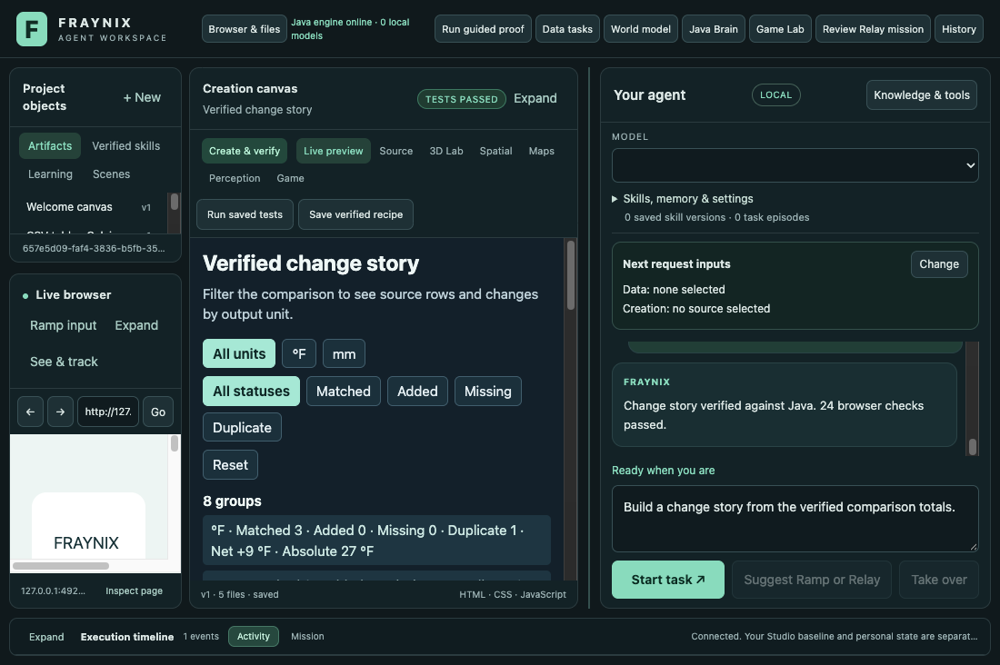
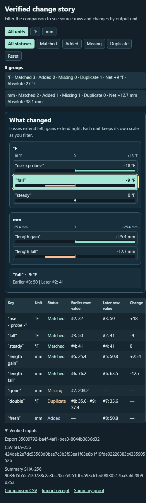

Turn checked comparisons into interactive change stories
Ask Fraynix to create an interactive change story from a verified comparison. Inspect the source readings behind a bar and export a single HTML file for offline use.

Chat creates the verified story inside Fraynix on Apple silicon

The exported file on Windows shows the source readings behind a selected loss
System files
Open source